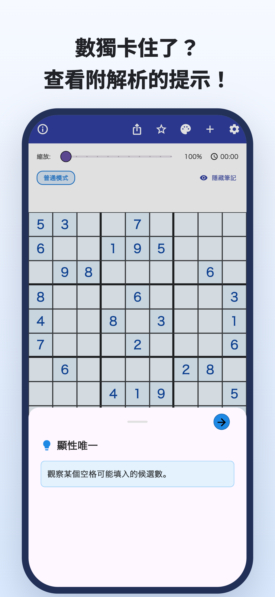
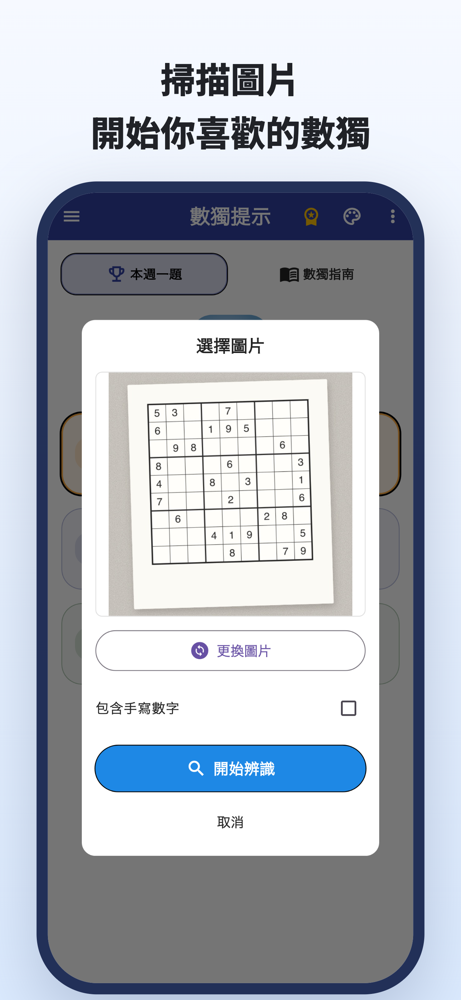
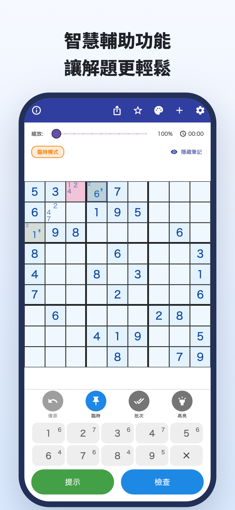
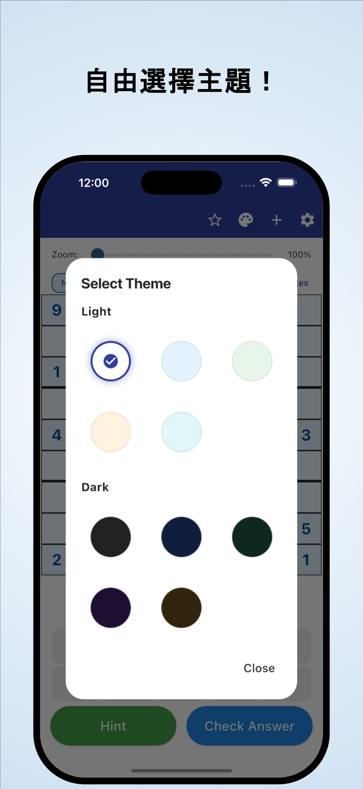

「接下來該看哪裡？」
反覆檢查盤面，還是填不出數字，
一直卡在同一個地方。
相機辨識 · 附理由的提示
報紙、雜誌上的題目，也能拍照匯入。
理解數字為何能填在這裡，再繼續自己解題。
iPhone、Android / 免費下載 · App 內購買




解題時，你也遇過這些情況嗎？
反覆檢查盤面，還是填不出數字，
一直卡在同一個地方。
為什麼這裡一定是這個數字？
照著答案填，並不能滿足好奇心。
想把手邊正在做的紙本數獨，
直接放進 App 裡繼續解。
把卡住的地方，變成下一條線索
從報紙或雜誌的照片中辨識數獨，減少逐一輸入數字的麻煩。
從圖片辨識透過提示了解數字能填入的理由。不只是補上答案，也為下一步思考提供線索。
附理由的提示查看各類技巧的講解與練習，再練習自己找出學過的技巧。
依技巧練習獻給享受獨立解題樂趣的你
匯入平常在做的題目，從停下的地方繼續。
理解卡住之處的理由，再自己往下解。
不論剛入門，還是想學下一個技巧。
閱讀 · 體驗 · 練習
先在瀏覽器裡試試。
閱讀講解，或完整挑戰一道題。
注意藍框的格子，打開提示看看。
下一步提示
請檢查空格中的候選數。
這是體驗一步解法的網頁範例，與 App 中的顯示不同。
數獨卡住時。
下載 數獨提示
免費下載 · App 內購買
可以免費下載及體驗。提示、答案檢查、圖片辨識等有使用次數限制；部分使用需要觀看影片廣告。
Premium 為按月或按年訂閱，可移除廣告，並無限使用提示及答案檢查等功能。即使訂閱 Premium，圖片辨識仍有上限。價格與使用條件請在 App 內確認。
可以匯入數獨的照片。開始前請檢查辨識出的數字，並修正錯誤。支援標準的 9×9 數獨。
可以挑戰 App 內的題目，也能查看技巧講解並練習。部分題目與練習需要 Premium。
除了本頁的一步示範，還能在瀏覽器中完整挑戰一道題，並閱讀技巧講解、進行練習。
數獨指南